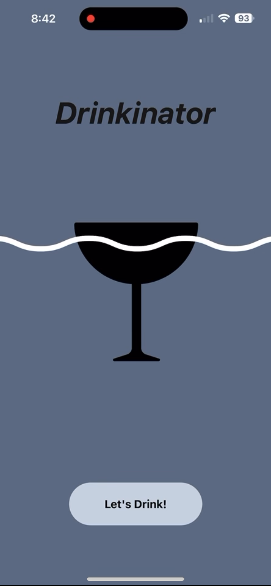

My Projects
Application design - Senior Project
The app offers a personalized drink recommendation system, allowing users to explore mixed drinks based on their preferences. Built using React Native, Nativewind, and other libraries, the back-end uses Javascript to access the Firestore database and TypeScript for cocktail retrieval.

Binary Search Optimization- Semester Project
This project investigates the optimization of search algorithms in instances where the datasets are skewed or distributed non-uniformly. The motivation is to incorporate advanced searching techniques and introduce a user friendly interface to solve the problems of search in large data bases.